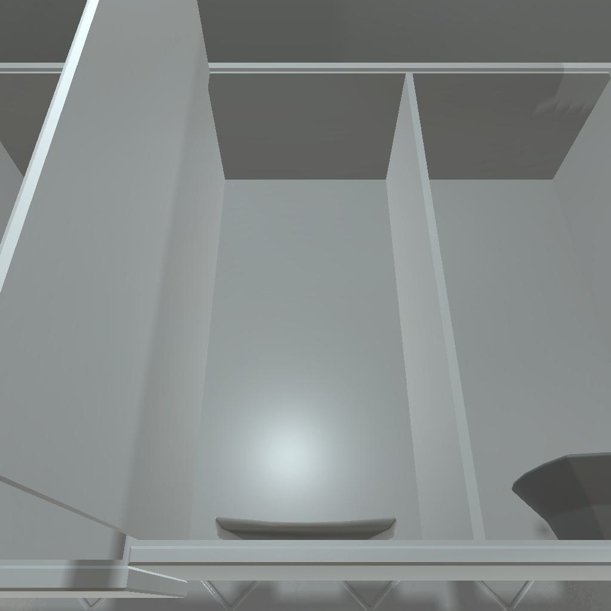

---------------------------------------------------------task: 21---------------------------------------------------------
--------------------------------------------------------------------------------------------------------------------------------------------------------------------
--------------------------------------------------------------------------------------------------------------------------------------------------------------------
Step:--------------------------------------------------------------------------19-------------------------------------------------------------------------------
----------------------------------------
VLM Prompt:
Image1:
Image2:
Image3:
**Instruction**
1. Analyze the provided images to identify all visible household objects and compare the difference between images (e.h. whether the object is opened or not and taken on hand or not), focusing on those relevant to the task description "heat some cup and put it in countertop."
2. Use the analysis of images and the task hint "The agent must find an object of the desired type, pick it up, go to a microwave, heat the object with the microwave, then find the correct location to place it, and put it down there. The agent does not need to use the microwave button or open the microwave to heat the object, and the agent just needs to do action that is "heat the object with the microwave"." to answer the question: what is the most reasonable action in the choices for the task description "heat some cup and put it in countertop"?
3. Decide and write the answer using the template: The answer is: (i): , where i is the real number. If there is no desired object in images, search every place based on **Initial Observation** to find the object. And if no one is exactly correct, choose a similar answer.
**Initial Observation**
You are in the middle of a room. Looking quickly around you, you can see cabinet (1-6), microwave (1), countertop (1-2), coffeemachine (1), toaster (1), sink (1), sinkbasin (1), fridge (1)
**Answer Choices**
(1): go to cabinet 2
(2): go to cabinet 3
(3): go to microwave 1
(4): go to cabinet 4
(5): go to cabinet 5
(6): go to cabinet 6
(7): go to countertop 1
(8): go to coffeemachine 1
(9): go to toaster 1
(10): go to countertop 2
(11): go to sink 1
(12): go to sinkbasin 1
(13): go to fridge 1
(14): open cabinet 1
(15): close cabinet 1
(16): take bowl 1 from cabinet 1
(17): take plate 1 from cabinet 1
(18): examine cabinet 1
**Answer**
Let's think step by step by following the instructions.
----------------------------------------
----------------------------------------
Original Response:
First, we need to identify all visible household objects in the provided images. In all three images, we can see the inside of what appears to be cabinet 1 with a bowl (bowl 1) and a plate (plate 1) visible on the shelves.
Now, let's compare the differences between the images. There is no noticeable difference between the three images; the bowl and plate remain in the same position, and the cabinet door is open in all images.
Considering the task description "heat some cup and put it on the countertop," we need to find a cup to heat in the microwave. However, there is no cup visible in the provided images, only a bowl and a plate. According to the initial observation, we are in a room with various numbered cabinets, appliances, and areas (like countertop and sink). Since there is no cup in cabinet 1, we must search other places to find it.
Based on the task hint, we don't need to use the microwave button or open the microwave; we just need to go to the microwave with the cup. However, we first need to find the cup, which is not in cabinet 1.
The most reasonable action from the choices provided would be to search other cabinets for the cup since it is not in cabinet 1. Therefore, the answer is:
The answer is: (2): go to cabinet 3
This choice is made because cabinet 3 is the next logical location to search for a cup, following the sequence of cabinets. If the cup is not in cabinet 3, we would continue searching the other cabinets or places where a cup might be stored.
----------------------------------------
----------------------------------------
>>> Refine Original VLM Response and Get Pure Action: go to cabinet 3
This choice is made because cabinet 3 is the next logical location to search for a cup, following the sequence of cabinets
----------------------------------------
-----------------------------------------------------------------
Running time: 52.97532844543457 seconds
Total Money: 13.480099999999997
-----------------------------------------------------------------
-----------------------------------------------------------------
Text Observation:Nothing happens.
-----------------------------------------------------------------
UNSUCCEED